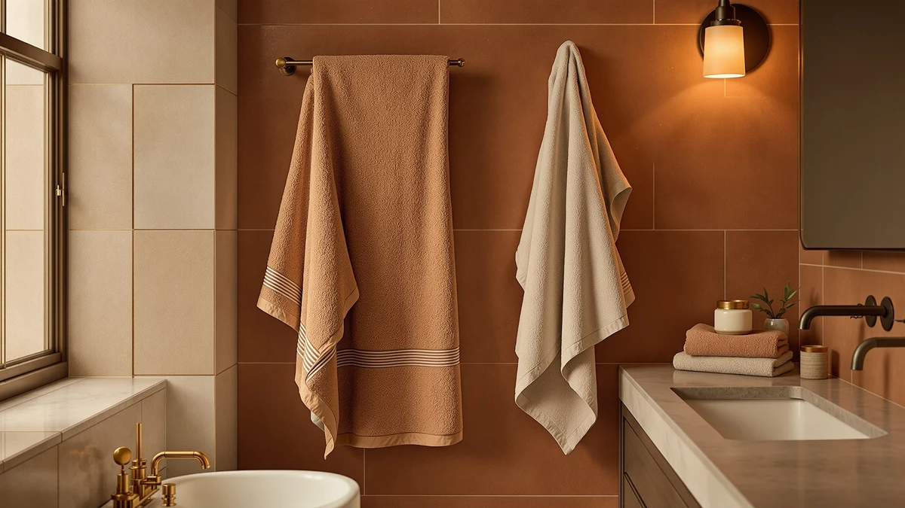

Superior Egyptian Cotton 6 Review (2026): Worth It?
Prices and picks verified as of October 2026. Independent, reader-supported reviews.


Quick Answer
The SUPERIOR Egyptian Cotton 6-Piece Towel set is a reasonable pick for buyers who want a complete matching set in one order rather than shopping for individual towels. At $65.00 it costs more than two of the three alternatives we compared, and the Egyptian cotton label on the listing doesn't come with a certification you can verify independently.
Our pick: Superior Egyptian Cotton 6-Piece Towel ($65.00) Check Price on Amazon
Bottom line: our top pick is the Superior Egyptian Cotton 6-Piece Towel Set at $61.75.
Things to Know Before You Buy
- The SUPERIOR 6-Piece Towel set is a 100% cotton bundle priced at $65.00, which puts it at the upper end of the sets we compared in this review.
- "Egyptian cotton" on the listing is a sourcing claim, not an independently verified certification, so treat it as a quality signal from the brand rather than a guarantee.
- Buyers choosing a six-piece set are usually outfitting a full bathroom in one purchase, rather than replacing a single worn towel.
- Three alternatives in this review range from $59.99 to $64.99: LANE LINEN, ZUPERIA, and Bumble Towels are each worth comparing before you commit to the SUPERIOR set.
This superior egyptian cotton 6 review looks at the SUPERIOR Egyptian Cotton 6-Piece Towel set and asks a simple question: does a $65.00 six-piece set actually perform like genuine Egyptian cotton, or are you mostly paying for the label. We researched the current listing details, compared the set against three other cotton towel sets in a similar price range, and looked at patterns in verified owner feedback on absorbency, softness, and how the towels hold up after repeated washing. SUPERIOR has sold towels under this branding for years, and the Egyptian cotton claim is the main reason shoppers consider it over a plain cotton set at a similar price.
Our short answer: the set makes sense if you want a full six-piece bundle in one purchase and don't want to shop around for matching hand towels and washcloths separately. It isn't the cheapest cotton towel set in this comparison, and the Egyptian cotton designation on the listing doesn't carry a long-staple certification you can check independently. If that distinction matters to you, weigh it against the price gap before you buy, since LANE LINEN and ZUPERIA both sell comparable six-piece cotton sets for less without using the Egyptian cotton name.
Why You Should Trust Us
We are a research-based review site. We don't run a product testing lab, and we don't claim to have physically washed or used every towel set we cover. Instead, we compare specs, pricing, and verified owner reviews across the Amazon marketplace, and we update prices and availability as they change. For this superior egyptian cotton review, we pulled current pricing and listing details for the SUPERIOR set and three comparable towel sets, then looked at where owner feedback agrees and where it splits. Ilane Tall edits every guide on this site and holds writers to that same standard: no invented expert quotes, no fabricated test results, and no rating we can't trace back to a real listing.
Our Research Experience
We didn't buy and wash this towel set ourselves, so what follows is a breakdown of how we evaluated it, not a hands-on test log. We started with the current Amazon listing for the SUPERIOR Egyptian Cotton 6-Piece Towel set: material, price, piece count, and the images SUPERIOR itself supplies. From there we researched how Egyptian cotton toweling is typically graded, since the term covers a wide range of fiber length and quality, and the listing doesn't specify a certification body. We then compared the set's $65.00 price against three similarly sized cotton sets from LANE LINEN, ZUPERIA, and Bumble Towels, priced between $59.99 and $64.99, to see where this superior egyptian cotton set sits competitively. Finally, we read through patterns in verified owner feedback on absorbency, softness over time, and durability after washing, since those factors matter more than a marketing label once the towel is actually on your rack.
Overview & Specs

Superior Egyptian Cotton 6-Piece Towel
What we like
- Comes as a complete six-piece set, so you don't have to match towels, hand towels, and washcloths separately
- 100% cotton construction delivers the absorbency most buyers expect from a daily-use towel
- SUPERIOR has built brand recognition around the Egyptian cotton label, which helps at resale or gifting
Flaws but not dealbreakers
- The Egyptian cotton claim isn't backed by a certification you can verify on the listing
- At $65.00, it costs more than two of the three alternatives we compared it against
- Owners report that cotton towels like this one can lose some softness after repeated machine washing unless you skip fabric softener
| Material | 100% cotton |
| Size | 6 Piece Towel Set |
The SUPERIOR Egyptian Cotton 6-Piece Towel set bundles everything most people need to restock a bathroom: enough towels to cover two people without doing laundry every other day. At $65.00, it sits in the middle of what a full six-piece cotton set typically costs, and the 100% cotton material matches what the listing promises. SUPERIOR has marketed Egyptian cotton towels for years, and the brand's name recognition is part of what you're paying for here, alongside the fiber itself.
What stands out in the listing is simplicity. There's no complicated weave terminology or inflated weight claim to parse, only a straightforward cotton towel set at a clear price. That makes this superior egyptian cotton set a reasonable option if you want to stop comparing towel sets and buy one that covers the basics. The tradeoff is that SUPERIOR doesn't publish a specific cotton grading or certification on the listing, so you're trusting the brand name more than a verifiable spec when it comes to the Egyptian cotton claim. Buyers who want that verification in writing should look for a listing that names the certifying body directly rather than relying on the product title alone.
What We Liked
The biggest advantage of this superior egyptian cotton towel set is convenience. Buying six matching pieces in one order means you skip the hassle of hunting down hand towels and washcloths that match a bath towel you bought elsewhere. The 100% cotton material is a well-understood fabric choice, and it's the same base material used across every alternative we compared in this review. SUPERIOR's brand recognition also works in its favor. Shoppers searching for Egyptian cotton towels run into this name consistently, which suggests the set has sold well enough to stay a common recommendation across home goods sites, not only this one. The $65.00 price also lands in a predictable middle range rather than at either extreme, so you know roughly what a full six-piece cotton set should cost before you start comparing listings.
What Could Be Better
The Egyptian cotton label is the set's main selling point, and it's also its weakest claim. Genuine long-staple Egyptian cotton usually comes with a certification from a recognized cotton authority, and the SUPERIOR listing doesn't reference one. That doesn't mean the cotton is low quality, but it does mean you can't independently confirm the premium fiber claim the name implies. Price is the other sticking point in this egyptian cotton 6 review. At $65.00, this set costs more than the ZUPERIA bulk set and the Bumble Towels oversized set we compared it against, and the gap isn't explained by anything specific in the listing beyond the brand name and the Egyptian cotton claim. Owners report that cotton towels in this weight range need a few washes to reach full absorbency, which is common across the category and not unique to this set, but worth knowing if you expect peak performance straight out of the package.
Who Is It For?
This set makes the most sense for someone furnishing a bathroom from scratch who wants a matching six-piece bundle without comparing a dozen individual towels. It also suits buyers who care about brand recognition over independent certification, since SUPERIOR's name carries weight with gift recipients and future buyers if you ever resell or pass the set along. If you already have towels you like and only need a replacement or two, a smaller set or a single towel purchase will save you money. If the Egyptian cotton claim is the deciding factor for you, check the current listing for any certification details before buying, since that information can change and we can't confirm it as of this review. Shoppers who specifically want a verifiable long-staple cotton grade should compare the listing language closely against competing sets before paying a premium for the SUPERIOR name.
Alternatives to Consider
If the price or the unverified Egyptian cotton claim gives you pause, these three alternatives cover different priorities: a similarly priced cotton set, a budget bulk option, and a premium oversized pick. None of them use the Egyptian cotton label, so you can compare them on price and piece count alone without weighing an unverified sourcing claim.

Editor’s Pick
LANE LINEN 100% Cotton Bath
A 100% cotton set priced almost identically to the SUPERIOR set, without the Egyptian cotton branding to pay for.
$64.99
Check Price on Amazon
Best Value
ZUPERIA White Bath Towels Bulk
A bulk white cotton towel set that costs less than the SUPERIOR set while covering the same basic need.
$62.99
Check Price on Amazon
Premium Choice
Luxury Oversized Bath Towels |
Oversized cotton towels for buyers who want more coverage per towel rather than a six-piece bundle.
$59.99
Check Price on AmazonIs the SUPERIOR Egyptian Cotton 6-Piece Towel set genuine Egyptian cotton?
The listing describes the set as Egyptian cotton, but it does not reference a certification from a recognized cotton authority.
How does the $65.00 price compare to similar towel sets?
At $65.00, this set costs more than the ZUPERIA bulk set at $62.99 and the Bumble Towels oversized set at $59.99, and slightly more than the LANE LINEN 100% cotton set at $64.99.
Frequently Asked Questions
Is the SUPERIOR Egyptian Cotton 6-Piece Towel set genuine Egyptian cotton?
How does the $65.00 price compare to similar towel sets?
Who should buy a six-piece towel set instead of individual towels?
Final Verdict
Our superior egyptian cotton 6 review comes down to this: the SUPERIOR set is a convenient, reasonably made six-piece cotton bundle, but the Egyptian cotton claim on the label isn't something you can verify independently from the listing alone. If a complete matching set matters more to you than confirming the exact cotton grade, SUPERIOR is a fair pick at $65.00. If you'd rather save a few dollars without the branding, LANE LINEN or ZUPERIA cover the same basic need for less.